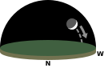
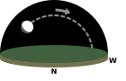
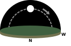
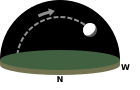
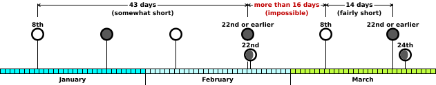
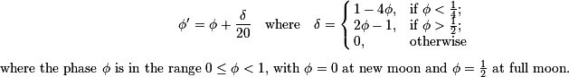

Update: Tolkien did use a 1940s calendar!
Read more here.
An Introduction to Lunar Phases
As you perhaps noticed on the home page or in the archives,
this site displays the phase of the moon
for each day of the adventure in The Lord of the Rings.
Since some readers will be curious
how this site computes the phase of the moon,
and others may even wish to do their own calculations,
this page attempts to collect everything known
about lunar phases in Tolkien's text.
The text of The Lord of the Rings usually offers
only a partial description of the Moon —
such as telling us that the Moon is shining
without mentioning from which direction,
or giving the time at which it sets without describing its phase.
So we are fortunate that the shape, position, and schedule of the Moon
are closely related,
allowing us to frequently deduce some of its properties from others.
The basic relationships are sketched in the following diagrams
for those who might be unfamiliar with them:
Waxing
Crescent
| Waxing
Gibbous
| Full
| Waning
Gibbous
| Waning
Crescent
|
|

|

|

|

|
|
- Already in the western sky at sunset.
- Sets before midnight.
| - Still in the eastern sky at sunset.
- Passes overhead before midnight.
- Sets before dawn.
| - Rises at sunset
- Overhead at midnight
- Sets at dawn
| - Rises before midnight.
- Passes overhead after midnight.
- In the western sky at dawn.
| - Rises after midnight.
- Still in the eastern sky at dawn.
|
In case you find the terminology unfamiliar,
the Moon is said to be waxing as it grows toward full,
waning as it shrinks again afterwards,
to be crescent when less than half full,
and to be gibbous when more than half.
The Problem New Moon of February, S.R. 1419
There are many nights during the adventure,
and indeed entire weeks and months,
for which The Lord of the Rings gives no description of the moon.
To display its phases, therefore,
requires a general schedule or formula
that gives the phase whether the text mentions the moon that night or not.
Since the new and full moons in the narrative
are separated by different lengths of time,
much like the slightly irregular schedule of the real Moon,
we cannot merely estimate the moon's phase
using the average length of the lunar month
and have the results match the text.
It would therefore be helpful
to find a modern schedule of new and full moons
matching those in The Lord of the Rings
upon which we could base our predictions.
Unfortunately,
any attempt to correlate modern Moon phases
with those in The Lord of the Rings
fails because of the impossibly long interval
between the New Moon of February, S.R. 1419
and the full moon that follows on March 8th.
As the Company travel down the Anduin after leaving Lórien,
we are told on February 22nd that:
At Aragorn's bidding they paddled now for long
spells, and the banks went swiftly by. But they saw little
of the country, for they journeyed mostly by night and
twilight, resting by day, and lying as hidden as the land
allowed. In this way the time passed without event until
the seventh day.
The weather was still grey and overcast, with wind from
the East, but as evening drew into night the sky away
westward cleared, and pools of faint light, yellow and
pale green, opened under the grey shores of cloud. There
the white rind of the new Moon could be seen glimmering in
the remote lakes. Sam looked at it and puckered his brows.
(II.9)
We can empathize with Sam and his puckered brows!
But while Sam himself is confused because he lost track of time
amidst the immortal beauty of Lórien,
we are confused because this crescent moon simply should not be visible yet.
Each month,
the crescent moon first becomes visible
one or two days after the moment at which the moon is new —
the instant at which it is most completely dark
and at the opposite end of its journey from full.
But this means that the actual moment of new moon
must have arrived more than a dozen hours
before Sam saw its crescent above the lakes,
putting the new moon far too early
when compared with the subsequent full moon:

Phases of the moon
for the beginning of S.R. 1419.
Even after making every possible concession,
the schedule of moons presented in The Lord of the Rings
remains impossible for the modern moon:
-
Could the date of the above passage
be later than February 22nd, S.R. 1419?
The Tale of Years records
that the Company departed from Lórien on the 16th,
making that the first day of their voyage;
the “seventh day
” on the Anduin
must therefore be the 22nd;
and this agrees precisely with the fact
that the attack on the boats above Sarn Gebir,
which the Tale places on the 23rd,
is described in the text as being
on the “eighth night
” of the voyage.
Even were we to ignore the Tale of Years,
the narrative of The Lord of the Rings is continuous from this point
to the full moon of March 8th,
so we can verify the time elapsed without reference to dates at all.
-
Could the next full moon have fallen earlier than March 8th?
Although Frodo and Sam
see the “full moon
” from Henneth Annûn
before dawn on the 8th,
we might be tempted to place the actual moment of full moon
on the evening of the 7th,
and hope that the moon would still have looked full to Frodo and Sam
several hours later;
but unfortunately we are told explicitly
that Pippin sees the moon as merely “almost at the full
”
after sunset on the 7th.
-
Could the time between this new and full moon
have been less than sixteen full days?
The estimate of only sixteen days is drastically generous,
and assumes
not only that the full moon fell
only two hours after midnight on March 8th,
but that when Sam on February 22nd saw the crescent moon
right after sunset — at around six in the evening —
he achieved a stunning naked-eye observation of a moon only sixteen hours old.
Since in modern times the period between new and full moon
never exceeds 15 days, 15 hours,
any modern schedule will still fall more than nine hours short
of the sixteen-day interval required by the text.
At least three wild theories can be contrived
to try explaining away the impossibility,
but all of them fall short:
-
Was the full moon viewed from a different enough longitude
than the new moon to account for this long interval?
This line of inquiry appears promising for a moment:
Henneth Annûn lies to the east of the river Anduin;
so Frodo and Sam experienced earlier sunrises and sunsets there
than while voyaging on the river;
so we could place the full moon they observed
nearer the new moon of February.
But a glance at the distances involved
suggests that the difference was probably less than twenty minutes.
And then we remember that it is from Rohan —
farther west of the River than Frodo and Sam are to its east —
that Pippin, in the early evening, sees the moon as not yet full;
so bringing longitude into our reckoning
will actually require us to move the full moon later,
so it still has enough time to become full after Pippin sees it.
-
But the text doesn’t say that Sam saw the moon in the sky!
It only says he saw the Moon “glimmering in the remote lakes”
which could have been magic lakes like the Mirrormere,
making visible what the eye could not normally see.
This clever maneuver requires us to read the text
as meaning that the Moon was only visible in the lakes,
but not also in the sky above them.
Besides being a forced and contrived reading of the passage,
this explanation would seem to founder on two rocks.
First, magic lakes in which the New Moon was visible a day early
should certainly have elicited more comment than is made in the text.
Second, Sam states late the next evening
that “we'd been a week on the way last night, when
up pops a New Moon as thin as a nail-paring
”,
clearly using the verb “up pops
”
to describe a Moon seen above the horizon.
-
Could the Third Age have been such a geologically ancient era
that the lunar month was longer?
We can receive no help from geologic history,
for the scientists tell us that in fact the Moon was closer —
and thus produced shorter, not longer, periods between its phases —
when the Earth was much younger.
And explanations of this sort are discouraged
by Tolkien himself in the Appendix on the “Shire Calendar”
where he states that in the Third Age,
“The year no doubt was of the same length,
for long ago as those times are now reckoned in years and lives of men,
they were not very remote according to the memory of the Earth.
”
The only remaining option is simply to accept,
without the possibility of an internal explanation,
that this particular New Moon of the Third Age
fell at least one day early,
and determine how to include this aberration
in a general framework for computing moon phases.
Causes and Consequences
The impossible moon phases of S.R. 1419 are explained very simply
if Tolkien was copying his moon phases out of an almanac for a real year,
and mistakenly thought
that almanacs use the phrase “new moon”
in its colloquial English sense,
meaning the date on which the new crescent moon appears.
But almanacs in fact use “new moon” in its astronomical sense,
to mean the moment when the moon is most dark.
Through this mistake,
Tolkien would have put a crescent moon in his narrative
everywhere he really wanted the dark of the moon,
and would thus have forced the actual new moons in Middle-earth
to each be one or two days too early.
If one examines the very few dates
which Tolkien could have counted as the first day of Shire year 1419
and gotten a pattern of full and new moons
matching the full and crescent moons given in the narrative,
one is immediately struck by the presence of Christmas 1941
in the list of dates:
-
We know from his Letters
that Tolkien was rewriting The Lord of the Rings
to correct its moon phases in early 1944,
when an almanac or calendar from 1942 would not only have been easy to find,
but could plausibly have still been lying about his desk.
-
Tolkien had already displayed a fondness for Christian feasts
by having the Company leave Rivendell on December 25th
(Christmas in our calendar)
and bringing the Ring to its end on March 25th
(the traditional date of the first Easter);
to have counted a modern Christmas as the beginning of a Shire year
would have been quite characteristic.
-
It is much harder to know whether this is relevant,
but let us note in passing that “1941”
and “1419” are anagrams.
For reference,
the following table demonstrates how counting Christmas 1941
as the first day of Shire year 1419
would have given Tolkien precisely the moons required:
| 1942 Almanac | Date in S.R. 1419
| Tolkien describes this moon:
|
|---|
|
| January 2nd | — Full
| January 8th
| As “full ”
|
| January 16th | — New
| January 22nd
| (not described)
|
| February 1st | — Full
| February 8th
| (not described)
|
| February 15th | — New
| February 22nd
| As the “white rind ” Sam sees
|
| March 3rd | — Full
| March 8th
| As “full ”
|
| March 16th | — New
| March 21st
| As a new crescent*
|
*Since on the 24th
they see a “waxing moon ... four nights old ”
|
To display the phase of the moon for this web site,
the real moon phases of 1942 are combined with a correction
that moves the moment of each new moon about a day and a half earlier.
The effect of this correction upon the waxing and waning half-moons
must be different:
the waxing half-moon must remain in place
so that the moon is still crescent
when Frodo sees it on February 29th,
but the waning half-moon must happen early
for a crescent moon to be seen by Frodo on January 16th.
The corrected phase we use is therefore:

Lunar References in the Text
Here are all of the references
to the actual appearance of the Moon in The Lord of the Rings
(a list which ignores things like references to the Moon in poetry and song).
References which create problems
when trying to work out a realistic schedule of moon phases
are highlighted and marked as “problematic”.
 1418 June 20
1418 June 20- This was the night that the forces of Sauron attacked Osgiliath.
At the Council of Elrond four months later, on October 25th,
Boromir recalls that his men described the Nazgûl as
“
a dark shadow under the moon
”.  1418 September 18 — problematic
1418 September 18 — problematic- On this night Gandalf was rescued
from his imprisonment atop the pinnacle of Orthanc,
which Frodo dreams of eight nights later
(on the evening of September 26th)
at the house of Tom Bombadil.
In his dream he sees “
the young moon rising
”,
which presents two problems:
first, that he should instead be seeing an old moon;
and second, that a young moon would be setting rather than rising.
We had better dismiss this observation
as a disorientation produced by the dream.
When he describes the dream at the Council of Elrond a month later,
he only mentions the moonlight falling on Gandalf's hair,
and the wizard,
in his own retelling of the event,
says merely that it was “a night of moon
”.  1418 September 24
1418 September 24- When hiding beside the road from the Black Rider at dusk,
Frodo sees that, “
Above
[the road] the stars
were thick in the dim sky, but there was no moon.
”  1418 October 4
1418 October 4- At their camp the night before reaching the Weather Hills,
the Hobbits and Strider see that,
“
The moon was waxing, and in the early night-hours
a cold grey light lay on the land.
”  1418 October 6
1418 October 6- Just before their camp on Weathertop is attacked,
the Hobbits see that above Strider
“
was a black starry sky.
Suddenly a pale light appeared over the crown of Weathertop behind him.
The waxing moon was climbing slowly above the hill that overshadowed them,
and the stars above the hill-top faded.
...
‘Look!’ said Merry.
‘The Moon is rising: it must be getting late.’
”
They continue to see the Moon on subsequent evenings
as they move south of the Road and make for the Last Bridge.  1419 January 8
1419 January 8- As Aragorn guides the Company of the Ring
through Hollin toward the Redhorn Pass,
the “
Moon, now at the full, rose over the mountains,
and cast a pale light in which the shadows of stones were black.
”
Before dawn we are told, consistent with this, that
“the moon was low.
”  1419 January 13
1419 January 13- Just before the final attack of the Wargs against the Company,
we are told that the “
night was old,
and westward the waning moon was setting,
gleaming fitfully through the breaking clouds.
”  1419 January 14 — problematic
1419 January 14 — problematic- Just before the outline of the West Gate of Moria appears on the cliff face,
we are told that the “
Moon now shone
upon the grey face of the rock
”,
which can only have happened after midnight —
and thus early on the 14th —
since a waning moon cannot shine on a westward-facing cliff
until it passes into the western sky after midnight.
So the “Tale of Years” must be incorrect
when it has the Company enter Moria before midnight on the 13th.  1419 January 15
1419 January 15- After the remaining Company emerge from Moria,
Aragorn warns them that they will lack light this evening since
“
The Moon is almost spent,
and it will be dark tonight
”,
and indeed when night falls we are told that,
“There were many clear stars,
but the fast-waning moon would not be seen till late.
”  1419 January 16 — problematic
1419 January 16 — problematic- In the night, before dawn, Frodo wakes and hears Orcs moving
past the flet on which he is sleeping, and sees that
the “
sickle Moon was gleaming dimly among the leaves
”.
This moon should really be exactly half-full, rather than sickle,
eight days after the full moon.  1419 February 22 — problematic
1419 February 22 — problematic- From the camp on the seventh evening after leaving Lórien,
we are told that “
the white rind of the new Moon could be seen
glimmering in the remote lakes
”,
raising the problems discussed at length above.  1419 February 23
1419 February 23- On the eighth night from Lórien the “
thin crescent of the Moon had
fallen early into the pale sunset
”,
which confuses Sam because he lost track of time in Caras Galadon.  1419 February 26
1419 February 26- As Merry and Pippin were dragged away by the Orcs,
the “
waxing moon was riding in the West,
”
and it is described explicitly as “the slim moon
... already falling westward
”
and a soon afterwards we are told of
“the last rays of the sickle moon.
”  1419 February 27
1419 February 27- As the Three Hunters pursue the Orcs who have captured Merry and Pippin,
we are told that, “
There in the still cool hour before dawn
they rested for a brief space. The moon had long gone down before them,
the stars glittered above them
... .
”
Late in the day Aragorn decides that,
“We will not walk in the dark
... If the Moon gave enough
light, we would use it, but alas! he sets early and is yet
young and pale.
”  1419 February 28
1419 February 28- When the Three Hunters halt again after sunset,
“
The young moon was glimmering in a misty sky
”,
and it is described explicitly as a “sickle moon.
”
Somewhat confusing is the description of this same Moon
when it is sighted by Merry and Pippin
from the Orc-camp that the men of Rohan have surrounded:
“Later in the night when the moon
came out of the mist, then occasionally
[the Riders] could be
seen, shadowy shapes that glinted now and again in the
white light, as they moved in ceaseless patrol.
”
This sounds at first reading as though the Moon is rising,
but of course a waxing crescent is always setting after nightfall;
we can only assume that “the moon came out of the mist
”
means actually that the mists
were themselves clearing away from in front of the Moon.
Clouds are given as the reason that the night darkens again later:
“It did indeed become very dark again; for the moon passed
westward into thick cloud, and Pippin could not see
anything a few feet away.
”
 1419 February 29
1419 February 29- From the cliffs of the Emyn Muil,
Frodo and Sam see the stars appearing “
like small white holes in the
canopy above the crescent moon.
”
The Moon is mentioned several more times after they have descended the cliff
and as they encounter Gollum,
and then by the time they set off Sam asserts that
“The Moon's gone, and the night's going.
”
Faramir says of this date during conversation at Henneth Annûn
that he saw the body of Boromir pass him on the Elven-boat
“in the grey dark under the young pale moon
”.
 1419 February 30
1419 February 30- When the old man who appears by the campfire
disappears after Aragorn confronts him,
we are told that “
The moon had set and the night was very dark.
”  1419 March 1
1419 March 1- The moon is visible above Gandalf, Aragorn, and the others
as they ride south towards Edoras:
“
Under the cold moon they went on once more,
as swift as by the light of day.
... The miles went by. The
waxing moon sank into the cloudy West.
”
Before dawn Frodo meets Gollum and retains him as a guide,
saying “Now for it! The Moon's gone, and the night's going.
We'd better start.
”  1419 March 2
1419 March 2- A Nazgûl flies across the Moon
as Frodo, Sam, and Gollum emerge from the Marshes before dawn,
and we are told:
“
It was not until the moon
had sunk, westering far beyond Tol Brandir, that
[Gollum] would
get up or make a move.
”
At the end of the day
the Riders of Rohan make camp on their way to battle
with the forces of Saruman,
and “In a great circle, under the starry sky and the waxing moon,
they now made their bivouac.
”  1419 March 3
1419 March 3- After driving Orcs from the doors of the fortress in the early night,
Éomer and Aragorn halt before the gates and see
“
The clouds were torn and drifting, and stars peeped out;
and above the hills of the Coomb-side the westering moon
rode, glimmering yellow in the storm-wrack.
”
Later, when Gimli announces that he killed two orcs,
“The sky now was quickly clearing and the sinking moon was
shining brightly. But the light brought little hope to the
Riders of the Mark.
”
Finally, “Aragorn looked at the pale stars, and at the moon, now
sloping behind the western hills that enclosed the valley.
”
And when later recounting the destruction of Isengard by the Ents,
Pippin remembers the same westerning moon:
“‘It must have been about midnight when the Ents broke the
dams and poured all the gathered waters through a gap in
the northern wall, down into Isengard. The Huorn-dark had
passed, and the thunder had rolled away. The Moon was
sinking behind the western mountains.’
”
 1419 March 4
1419 March 4- Above Gandalf as he leads King Théoden towards Isengard,
“
The slow moon mounted, now waxing towards the full,
and in its cold silver light the swelling grass-lands
rose and fell like a wide grey sea.
”
The wolves scavenging at the Fords slink away when they see
“Gandalf in the moon, and Shadowfax his horse shining like silver.
”  1419 March 5
1419 March 5- Hours before dawn, as they approach Isengard, we are told that
“
Dark lay the vale before them,
for the moon had passed into the West, and its light was hidden by the hills.
”
Even later “the watchmen cried out, and all awoke. The moon was gone.
”
The Moon appears again that evening after dark
as they are returning southward from Isengard:
“Night came down from the mountains. All the mists were
gone. A chill wind blew. The moon, now waxing round,
filled the eastern sky with a pale cold sheen.
”
A few more references are made to the Moon,
adding no further information,
as Pippin steals and looks into the Palantír
and then as a Nazgûl passes across the Moon's face.
From the point of view of Frodo and Sam and Gollum,
“The moon was now three nights from the full, but it did not
climb over the mountains until nearly midnight, and the
early night was very dark.
”
 1419 March 6
1419 March 6- Before dawn Aragorn as he is overtaken by the Dúnedain sees
“
The sinking moon was obscured by a great sailing cloud
”.
In the evening,
Frodo etc see “The night became fine under star and round moon
”.  1419 March 7
1419 March 7- As Pippin rides east with Gandalf on Shadowfax,
we are told that on “
the third night since he had looked in the stone
”
he saw “the moon rising above the eastern shadows,
now almost at the full.
”
This raises the difficulty that the third night
could refer either to the evening of the 7th or the 8th,
depending on how one counted;
but fortunately the ambiguity is resolved a few paragraphs later
when Pippin wonders where Frodo is
and we are told that Frodo was looking on
“that same moon as it set beyond Gondor ere the coming of the day.
”
This means that we correctly place this observation
such that the following morning Frodo is seeing the full moon set
from Henneth Annûn.  1419 March 8
1419 March 8- When Faramir wakes Frodo he says “
the full moon is setting
”,
and when the Hobbits go outside they indeed see
that “in the West the full moon was sinking, round and white.
”  1419 March 9
1419 March 9- When in the evening Théoden reaches Dunharrow,
he tells Éomer that “
Last night the moon was full, and in the
morning I shall ride to Edoras to the gathering of the Mark.
”  1419 March 10
1419 March 10- In the morning before dawn,
as Gollum leads Frodo and Sam westward towards the crossroads,
“
the sinking moon escaped from the pursuing cloud
”.  1419 March 24
1419 March 24- As the armies of the West spend the night encamped
in the desolate plain before the Black Gate of Mordor,
we are told that “
the
waxing moon was four nights old, there were smokes and
fumes that rose out of the earth and the white crescent
was shrouded in the mists of Mordor.
”  1419 April 8
1419 April 8- As Frodo and Sam relax in the evening
after being honored on the Field of Cormallen,
“
the round Moon rode slowly above the mists of Anduin and
flickered through the fluttering leaves
”.  1421 September 22 — problematic
1421 September 22 — problematic- As Frodo and Sam ride through the Shire at night
with Elrond, Galadriel, and the other High-Elves who are leaving Middle-earth,
the text tells us that “
the Moon went westward
” above them.
In fact, it seems that no moon should have been visible.
©2007–2020 Brandon Rhodes